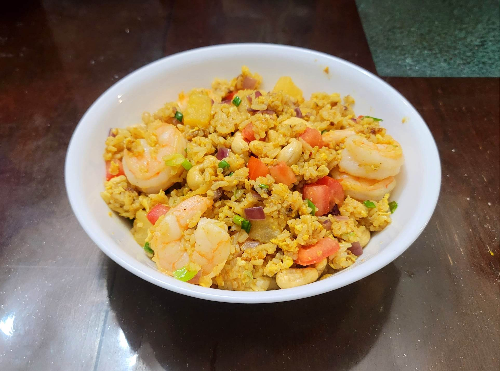

Pineapple Fried Rice

Ingredients:
- 375 g Cooked rice or Coconut rice
- 12 large Shrimp, peeled, optionally tail on
- 1 1/4 tsp Curry powder
- 1/2 tsp White pepper
- 1/2 tbsp Sugar
- 1/4 tsp Salt
- 2 tbsp Fish sauce
- 2 tbsp Soy sauce
- Optional: 1/2 tbsp Thai shrimp paste
- 3 tbsp Canola oil
- 2 Eggs
- 1 small Onion, diced
- 1 cup Pineapple, cubed
- Optional: 2 tbsp Raisins
- 1/2 cup Cashews, roasted
- 2 Scallions, sliced
- 1 Roma tomato, diced
- Optional: Toasted shredded coconut
Instructions:
- Combine the curry powder, white pepper, sugar, and salt into a small bowl. Mix well and reserve. In another small bowl, do the same with the soy sauce, fish sauce, and shrimp paste.
- Heat 2 tbsp oil in a wok over high heat. Sear the shrimp for about 2-3 minutes per side and then remove from the wok and reserve, leaving the oil in the wok.
- Add the remaining tbsp of oil to the wok and add the eggs and scramble. When the eggs are half-way cooked, add in the rice and onions and toss to combine.
- Throw in the reserved dry seasonings and wet seasonings while tossing vigorously to evenly distribute. Then add in the pineapple and raisins. Let the rice sit still in the hot wok for 10-15 second intervals before tossing aggressively to toast. Repeat this waiting and tossing cycle until well toasted.
- Remove from the heat and toss in the cashews, tomato, scallions, and coconut. Toss to combine and serve immediately.